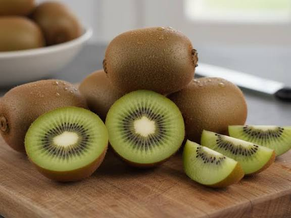
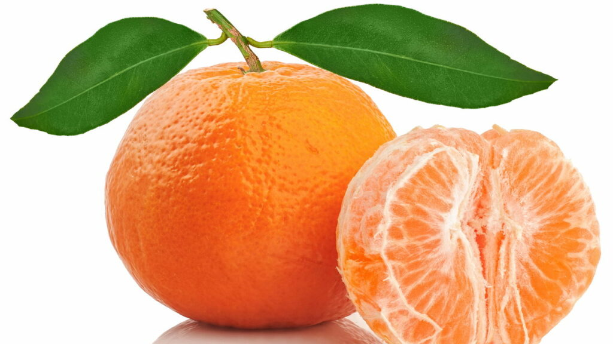
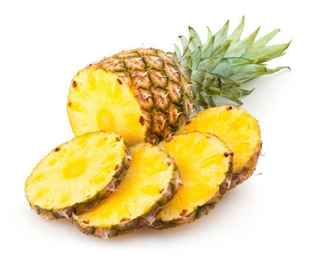
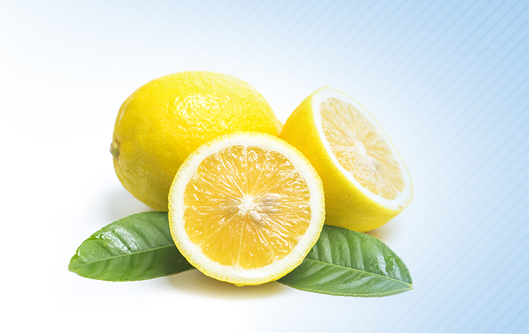

Kiwi Fresco
Doce, levemente azedo e perfeito para sobremesas ou consumo natural.
Preço: R$ 12,99 / kg
Ricas em vitamina C e antioxidantes, as frutas cítricas são grandes aliadas da imunidade e saúde dos órgãos.

Selecione as frutas mais frescas e ricas em vitamina C para a sua rotina.

Doce, levemente azedo e perfeito para sobremesas ou consumo natural.
Preço: R$ 12,99 / kg
Ideal para aquele suco natural logo cedo ou para acompanhar uma sobremesa.
Preço: R$ 5,49 / kg

Muito fácil de descascar, extremamente doce e cheia de caldo.
Preço: R$ 7,99 / kg

Sabor tropical intenso, excelente para sucos, geleias ou assado.
Preço: R$ 6,50 / unidade

O toque de acidez essencial para temperos, limonadas e drinks.
Preço: R$ 4,99 / kg